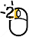
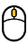

QAmiRSeq: User Guide
How to run QAmiRSeq pipeline from scratch
Prerequisites
!!! Do make sure all the following prerequisites are meet The following open source should be downloaded and installed 1. download bowtie from https://sourceforge.net/projects/bowtie-bio/files/bowtie/0.12.7/ 2. install cutadapt packages https://pypi.python.org/pypi/cutadapt Then add the executables to your PATH ! Perl modules required to be installed: First, you can test whether these modules installed by using the following command lines perl -e "use Config::Simple" perl -e "use Parallel::ForkManager" perl -e "use Compress::Zlib" perl -e "use MIME::Base64" If you don't see any error message, you have them successfully installed. Otherwise, install them R packages required to be installed: reshape2, ggplot2, latticeExtra and scales
Install QAmiRSeq package
You need to download and install QAmiRSeq from http://QAmiRSeq.sourceforge.net #set environment variable to point to your installation directory export QAmiRSeq=QAmiRSeq_installation_Directory #add QAmiRSeq to your system path export PATH=$QAmiRSeq:$PATH #!!! # It is assumed you're using bash shell. if NOT, please adjust the command line accordingly. # Especially, if you are using CSH, please set QAmiRSeq using # setenv QAmiRSeq QAmiRSeq_installation_Directory # Not set QAmiRSeq QAmiRSeq_installation_Directory #!!!
Preparation of miRNA/hairpin/mRNA/smallRNA database
After you download and unpack the QAmiRSeq package, you should go to $QAmiRSeq/database folder and then run create_database_util.sh to create databases for human/mouse/rat. This step will take a couple of hours (between 2-4hr) !!! Don't move ahead until your database creation is successfully done !!! You are encouraged to customize create_database_util.sh and create your own smallRNA and mRNA databases.
Example of Run Configuration File
!!! Please modify settings based on your environment. # ### general run configuration file # # directory for FASTQ files FASTQ_DIR=./fastq # suffix for fastq: fq.gz or fastq.gz or fastq or fq FASTQ_SUFFIX=fastq # target folder OUTPUT_FOLDER=output # stranded or nonstranded. #0: nonstranded; 1: forward strandness; 2: reverse strandness STRAND=1 # the CPU cores, recommended 8 to 12 if multiple cores are available CPU=8 # 5- and 3- end extension EXTENSION5=4 EXTENSION3=5 # for clean reads with adapter trimmed, set it to no. CUTADAPT_REQUIRED=yes # parameter for adapter cutting CUTADAPT_PARAMETER="-a TGGAATTCTCGGGTGCCAAGG -a AGATCGGAAGAGCACACGTCT -m 16" # filter out reads with low abundance (optional strongly recommended) FILTER_NOISE_READS=yes # subtract reads mapped to miRNA with mismatches but have better hits in reference genome # (recommended, but optional) #!!! # If turn it on, be sure you have created bowtie index library for the reference genome. #!!! REFINE_MISMATACH_READS=no # run unique reads versus the library size analysis (optional, only recommended for comprehensive analysis) # The results are written into uniqReads.library.csv UNIQUE_LIBRARY_ANALYSIS=yes # The offset (5 and 3 end) analysis of mapped reads # If set to yes, it's better to change the 5' and 3' end extension to 4 and 5, respectively OFFSET_ANALYSIS=yes # run 5' and 3' end extension evaluation (optional,only recommended for comprehensive analysis) # To explore the impact of extension on miRNA read mapping # File extension.evaluation.csv record the number of mapped mirna reads RUN_EXTENSION_EVALUATION=no # keep intermediate files or not keepTemp=yes # ### filtering noise miRNA reads # # A read is filtered out if # 1)the % of samples having ZERO counts is above the threshold (a fraction) # 2)the number of samples having ZERO counts is above the threshold (an integer) # AND ## The average read count across SAMPLES is below the cuttoff # recommended 0.60-0.80 (80%) # you can define the meaning of ZERO, not necessarily 0 ZEROCOUNT_THRESHOLD=0 ZEROCOUNT_SAMPLE_THRESHOLD=0.60 AVG_READ_THRESHOLD=2 # ### Species-specific miRNA database # # sample source SPECIES=human # Bowtie index for miRNA, hairpin, smallRNA, and mRNA RNA_BOWTIE_INDEX=/hpc/grid/shared/ngsapp/QAmiRSeq/database/human/db_stranded_0 #Bowtie index for reference genome GENOME_BOWTIE_INDEX=/hpc/grid/shared/ngsdb/bowtie/hg19 # MINIMUM and MAXIMUM miRNA length,used to filter reads too short or too long when mapped to miRNA MIN_MIRNA_LENGTH=16 MAX_MIRNA_LENGTH=28
Reads mapping, counting and summary
Please refer to $QAmiRSeq/demo_run and see how to analyse your own dataset. In essence, you need to prepare two files. 1. allIDs.txt: containing the list of samples that you want to analyze 2. run.config: a control file in which you can instruct how the analysis is done There is run.config.template that comes with QAmiRSeq package. You can copy this template and then customize it. Run the pipeline: perl $QAmiRSeq/QAmiRSeq.pl allIDs.txt run.config
Generate an integrated report
Go to your output folder, and run a single command line
$QAmiRSeq/QAmiRSeq-report.sh
NOTE: TAB delimited sample.annotation.txt Annotation is optional but it is strongly recommended.
column #1: sample_id
column #2: subject_id
column #3--#n (optional)
For clinical miRNA-seq, samples from the same subject should be assigned to the same subject_id.
QAmiRSeq requires the first and second columns correspond to sample and subject identifiers, respectively.
A sample name should start with a letter, and does not contain any white space in the middle.
All analysis are accessible from index.html
Descriptions on data and figure summary files
Descriptions on main output files #Delimited by "\t:\t" ================================================================= alignment : folder for miRNA read alignment graphs : folder for all graphs cutadapt.summary.txt : The summary for adapter trimming isoform.Counts.csv : The read counts table for individual isomiRs isoform.Counts.Mismatch.csv : The mismatch read counts table for individual isomiRs isoform.filter.Counts.csv : The read counts table for individual isomiRs with noisy reads filtered out isoform.filter.Counts.Mismatch.csv : The mismatch read counts table for individual isomiRs isoform.filter.RPM.csv : The RPM table for individual isomiRs with noisy reads filtered out isoform.RPM.csv : The RPM table for individual isomiRs miR.Counts.csv : miRNA read counts table without filtering miR.Counts.Mismatch.csv : miRNA mismatch read counts table without filtering miR.RPM.csv : miRNA RPM table without filtering miR.filter.Counts.csv : miRNA read counts table with filtering of noisy reads miR.filter.Counts.Mismatch.csv : miRNA mismatch read counts table with filtering of noisy reads miR.filter.RPM.csv : miRNA RPM table with filtering of noisy reads miR.RPM.csv : miRNA RPM table without filtering miRNASeq.readRedundancy.txt : Read redundancy in each annotated category QAmiRSeq.summary.txt : The summary of read mapping and annotation readAnnotDistribution.csv : The distribution of annotated reads readLenDistribution.csv : The distribution of read lengths smallRNA.Counts.csv : smallRNA read counts table without filtering uniqReads.library.csv : cumulative unique and total reads Descriptions on summary plot ======================================================== cut-adapter-withAdapter.png : barplot--The percentage of reads with adapters cut-adapter-TotalReads.png : barplot--sequence library size cut-adapter-SurvivalReads.png : barplot--The percentage of survival reads after adapter trimming joint-unique-mapping.png : the cumulative number of unique and total reads miRNA-reads.png : barplot--total number of mapped miRNA reads in each sample miRNA-reads-split.png : barplot--miRNA reads split between perfect and mismatch miRNASeq-reads-annotation.png : barplot--distribution of annotated mimiRNA-seq reads miRNA-detected.png : barplot--detected miRNAs with and without filtering miRNA-counted.png : barplot--detected miRNAs after filtering miR-rpm-corr.png : Expression correlation plot among all samples miR-offset-5end.png : barplot--Distribution of 5-end offset of unique miRNA reads miR-offset-3end.png : barplot--Distribution of 3-end offset of unique miRNA reads miR-offset-53.png : 3d-plot--Distribution of 5- and 3-end offset of unique miRNA reads miRNASeq-reads-redundancy.png : barplot--redundancy of reads (#Reads/#Unique_Reads) miRNASeq-reads-redundancy.scaleFree.png : barplot--same as miRNASeq-reads-redundancy.png but y scale-free readRedundancy.hairpin.png : barplot--hairpin reads redundancy(#Reads/#Unique_Reads) readRedundancy.miRNA_mismatch.png : barplot--miRNA reads (with mismatches) reads redundancy(#Reads/#Unique_Reads) readRedundancy.miRNA.png : barplot--miRNA reads redundancy(#Reads/#Unique_Reads) readRedundancy.mRNA.png : barplot--mRNA reads redundancy(#Reads/#Unique_Reads) readRedundancy.smallRNA.png : barplot--smallRNA reads redundancy(#Reads/#Unique_Reads) readRedundancy.Total.png : barplot--all reads redundancy(#Reads/#Unique_Reads) readRedundancy.unaligned.png : barplot--unaligned reads redundancy(#Reads/#Unique_Reads) total-miRNA-reads.png : barplot--total and miRNA reads in each sample total-reads.png : barplot--total input reads in each sample for mapping ########################################################################## Note: the following 3 figures will NOT be generated if no adapter trimming ######################################################################### cut-adapter-SurvivalReads.png cut-adapter-TotalReads.png cut-adapter-withAdapter.png
Explore integrated and interactive report
Open the index.html file under Results folder and you will have access to all data
and figures, and drill down miRNA-seq analysis results in an interactive way.
Meaning of mouse icons
Left click to interactive plot
Left click
Right click
 Double left click
 Scroll middle wheel
Create a boxplot for one gene
Step 1: Click on the "pointing hand" icon on the master report HTML page to get to gene expression table.

Step 2: Search by keyword and then left click on any column except the first two on a gene.

Step 3: Now you should see dot plot to show gene expression level in RPKM value on all samples

Step 4: Right click on any plot area to bring up the drop down menu for sample grouping, data transformation and chart customization

Step 5: Group samples by following menu "Group Samples" and then select features you want samples to be grouped upon for box plot. The sample features are gathered from the optional "sample.annotation.txt" file under "Summary" directory.

Step 6: Click on any plot area to remove the menu and you should see a boxplot.

Step 7: Data can be transformed to various scales by right click on the plot to bring up the menu and then follow "Data" -> "Transform" -> "Log Base 2" for log2 transformation

Step 8: The chart can also be customized in many ways. For example, The font of sample labels will be enlarged by following "Customize" -> "Sample Labels" -> "Font" -> "Bigger". The more you click on the "Bigger" button, the larger the font becomes.

Step 9: Add y-axis title by following "Customize" -> "Axes Titles" -> "Text". Type in title in the input box and then click the nearby cycling button.
Step 10: The size of Window and Canvas can be changed by click-and-drag the left bottom corner as indicated by the black arrows. Follow "Data Points Attributes" -> "Color by" to color data points based on a feature.

Step 11: Move mouse up to the top of the canvas to activate the top menu, click on the "Camera" button to get a nice png image for publication.

Step 2: Search by keyword and then left click on any column except the first two on a gene.
Step 3: Now you should see dot plot to show gene expression level in RPKM value on all samples
Step 4: Right click on any plot area to bring up the drop down menu for sample grouping, data transformation and chart customization
Step 5: Group samples by following menu "Group Samples" and then select features you want samples to be grouped upon for box plot. The sample features are gathered from the optional "sample.annotation.txt" file under "Summary" directory.
Step 6: Click on any plot area to remove the menu and you should see a boxplot.
Step 7: Data can be transformed to various scales by right click on the plot to bring up the menu and then follow "Data" -> "Transform" -> "Log Base 2" for log2 transformation
Step 8: The chart can also be customized in many ways. For example, The font of sample labels will be enlarged by following "Customize" -> "Sample Labels" -> "Font" -> "Bigger". The more you click on the "Bigger" button, the larger the font becomes.
Step 9: Add y-axis title by following "Customize" -> "Axes Titles" -> "Text". Type in title in the input box and then click the nearby cycling button.
Step 10: The size of Window and Canvas can be changed by click-and-drag the left bottom corner as indicated by the black arrows. Follow "Data Points Attributes" -> "Color by" to color data points based on a feature.
Step 11: Move mouse up to the top of the canvas to activate the top menu, click on the "Camera" button to get a nice png image for publication.
Create a heatmap for genes
Step 1: Type in or select genes from the above table. Click on "Plot" when it is ready.

Step 2: Right click on any plot area to bring up the drop down menu for sample grouping, data transformation and chart customization

Step 3: Sort samples by following menu "Data" -> "Sort Samples" -> "By Sample Category" and then select features you want samples to be sorted. The sample features are collected from the optional "sample.annotation.txt" file during pipeline run.

Step 4: Data can be transformed to various scales by right click on the plot to bring up the menu and then follow "Data" -> "Transform" -> "Log Base 2" for log2 transformation

Step 5: The chart can be customized in many ways. For example, The font of sample labels will be enlarged by following "Customize" -> "Variable Labels" -> "Font" -> "Bigger". The more you click on the "Bigger" button, the larger the font becomes.

Step 6: The size of Window and Canvas can be changed by click-and-drag the left bottom corner as indicated by the black arrows.

Step 7: Move mouse up to the top of the canvas to activate the top menu, clicak on the "Camera" button to get a nice png image for publication.

Step 2: Right click on any plot area to bring up the drop down menu for sample grouping, data transformation and chart customization
Step 3: Sort samples by following menu "Data" -> "Sort Samples" -> "By Sample Category" and then select features you want samples to be sorted. The sample features are collected from the optional "sample.annotation.txt" file during pipeline run.
Step 4: Data can be transformed to various scales by right click on the plot to bring up the menu and then follow "Data" -> "Transform" -> "Log Base 2" for log2 transformation
Step 5: The chart can be customized in many ways. For example, The font of sample labels will be enlarged by following "Customize" -> "Variable Labels" -> "Font" -> "Bigger". The more you click on the "Bigger" button, the larger the font becomes.
Step 6: The size of Window and Canvas can be changed by click-and-drag the left bottom corner as indicated by the black arrows.
Step 7: Move mouse up to the top of the canvas to activate the top menu, clicak on the "Camera" button to get a nice png image for publication.
How to make the report publicly available at github.com
Create a repository by login github.com
NOTE: if you don't have a github account, create one first by clicking the link.
Step 1: Click on the "New repository" icon.

Step 2: Type in project name such as MyProject and description and then click "Create repository" icon.

Commands to add the report files to github repository
Text in red need to be replaced by your own settings.
Now, the report is available at http://username.github.io/MyProject .
git clone https://github.com/username/MyProject.git cd MyProject git checkout --orphan gh-pages cp -R path2result/Results/* . git add . git commit -a -m "Adding index.html" git push origin gh-pages
Now, the report is available at http://username.github.io/MyProject .